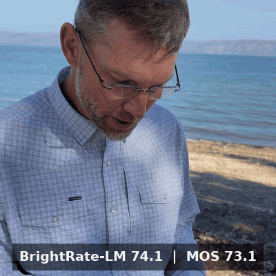
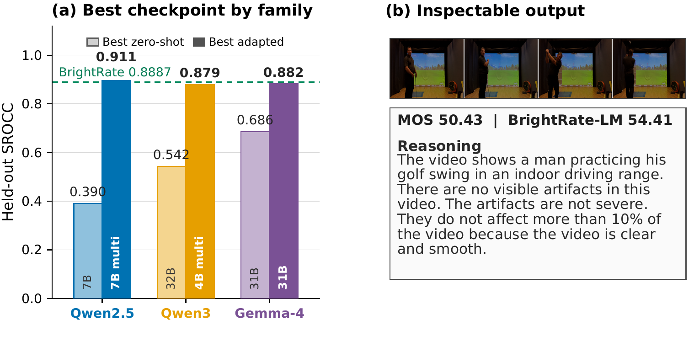
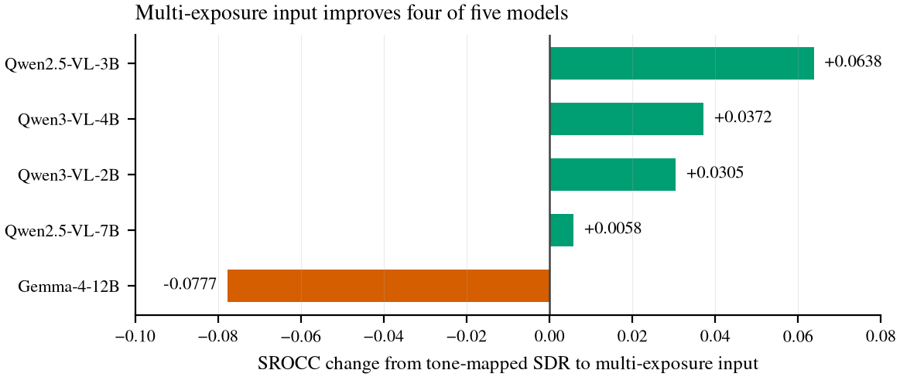
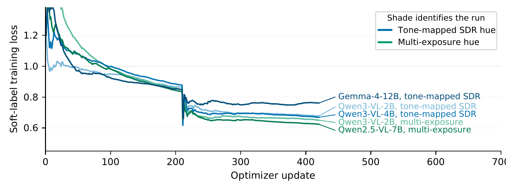
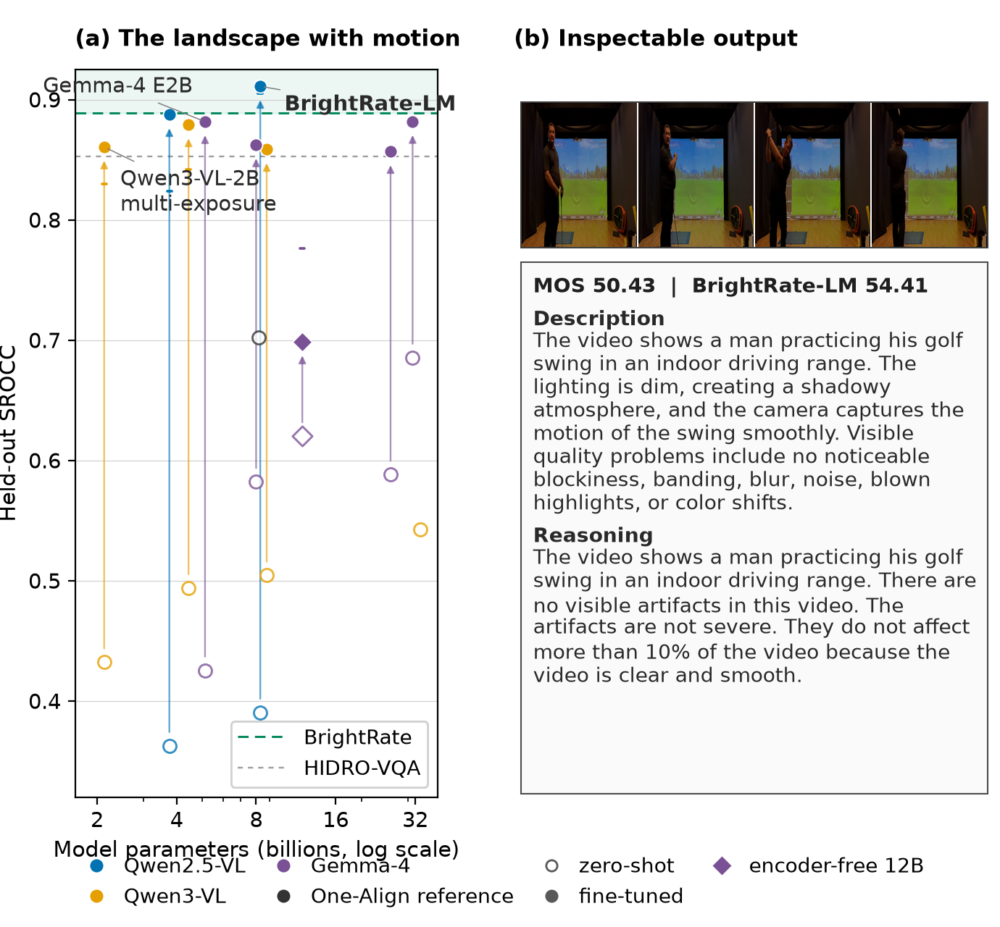
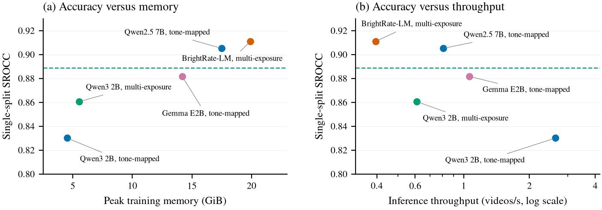

BrightRate-LM
Representation-Aware Reasoning Quality Assessment for User-Generated HDR Video
Machine Vision and Applications, WACV 2026 Special Issue (in submission)
What this is
BrightRate-LM scores the perceptual quality of user-generated HDR video and explains itself: every prediction comes with generated reasoning that connects visible defects to the score. The clip on the right is a held-out example; the banner shows the actual recorded prediction next to the human mean opinion score.
The model adapts Qwen2.5-VL-7B with rank-16 LoRA on BrightVQ. This work extends BrightRate (WACV 2026, Oral) into a controlled study of how multimodal language models see HDR at all: three model families, checkpoints from 2B to 31B, and three ways of presenting HDR pixels, from a Hable tone-mapped proxy to multi-exposure stacks to raw PQ code values.

Adaptation, not scale, is what matters
Zero-shot, even strong recent checkpoints are poorly calibrated for HDR quality: the best generic model reaches 0.6856 SROCC on BrightVQ, well below the classical BrightRate predictor at 0.8887. After the same lightweight adaptation recipe, every family jumps past its zero-shot self, and the ordering by parameter count is not preserved. The adapted 7B flagship overtakes BrightRate; a 2B checkpoint gets within four points of it.

| Model | Input | SROCC | PLCC | KRCC | RMSE |
|---|---|---|---|---|---|
| BrightRate-LM, 7B | Multi-exposure | 0.9052 | 0.9107 | 0.7281 | 5.5348 |
| BrightRate, published | HDR-aware features | 0.8887 | 0.8970 | 0.7059 | 5.7514 |
BrightRate-LM values are means over five content-separated repetitions; BrightRate values are the published 100-split medians. Without retraining, the frozen adapter also transfers: 0.8958 SROCC on the 8,281-clip Beyond8Bits official test set.
How you show HDR matters more than model size

A single tone-mapped frame discards the highlight and shadow evidence that HDR quality judgments depend on. BrightRate-LM instead sees each frame at −2, 0, and +2 stops, so crushed shadows and clipped highlights stay visible to the model.
This one change moves rankings more than model scale does. The 3B checkpoint with multi-exposure input (0.8875) overtakes the 8B checkpoint with tone-mapped input (0.8586), reversing a fourfold difference in parameters. Four of the five paired checkpoints improve; the only decline is the architecturally unusual encoder-free Gemma-4-12B.
Raw PQ code values also work once the interface is right: after clip-level statistics matching, the encoder-free model reads native PQ at 0.8383 SROCC, above its own tone-mapped 0.7763. HDR pixels are not the obstacle; mismatched input statistics are.
Training is stable; scale stays non-monotonic
Every run reduces its soft-label loss under one shared recipe: two epochs, rank-16 LoRA, about 47.6M trainable parameters for the flagship. Falling loss does not sort the families by size, though. Multi-exposure runs (green) settle lower than their tone-mapped counterparts (blue), and the encoder-free 12B trains to the weakest development score in its family, previewing its held-out outlier behavior.

Every score arrives with its reasoning
The score is a deterministic expectation over five quality-level tokens, and the same adapted model separately generates the reasoning, so the text never alters the number. On held-out videos the two stay consistent: a blurry 720p track meet is scored 31.6 against a MOS of 31.8, with reasoning that points at the motion blur and color shifts that drove the rating.

The released records keep the misses too: on a nighttime police-checkpoint scene the model scores 35.2 against a MOS of 48.8, and the reasoning makes the failure inspectable rather than silent.
Costs stay practical
The multi-exposure interface triples the image count but not the budget: peak training memory rises from 4.53 to 5.53 GiB on the 2B checkpoint and from 9.13 to 10.29 GiB on the 4B. The 7B flagship trains in 19.91 GiB on a single A100 and evaluates at 0.40 videos per second, so accuracy, memory, and throughput can be traded along one frontier.

Key findings
- Adaptation improves every completed checkpoint, but zero-shot rank does not predict adapted rank, and more parameters do not guarantee a better HDR quality model.
- Multi-exposure input improves every tested Qwen checkpoint over a single Hable tone-mapped view, and lets a 3B model beat an 8B one.
- Only Gemma-4-12B is encoder-free: it sends pixels through a single learned projection rather than a vision transformer, and it is the family outlier in every comparison.
- Two historical native-PQ failures were implementation artifacts. With clip-level statistics matching, the encoder-free model learns HDR quality directly from PQ code values (0.8383 SROCC).
Data
Experiments use BrightVQ from BrightRate: 2,100 HDR10/PQ videos over 300 sources with crowdsourced MOS.
Models
The multi-exposure 7B adapter is the primary release. All adapters are available from the Hugging Face profile.
| Adapter | Input |
|---|---|
| brightrate-lm-7b-multiexposure | Multi-exposure, primary |
| brightrate-lm-7b-sdr | Tone-mapped SDR |
| brightrate-study-gemma4-12b-multiexposure | Multi-exposure |
| brightrate-study-gemma4-12b-native-pq | Native PQ |
| brightrate-study-gemma4-12b-sdr | Tone-mapped SDR |
| brightrate-study-gemma4-26b-sdr | Tone-mapped SDR |
| brightrate-study-gemma4-31b-sdr | Tone-mapped SDR |
| brightrate-study-gemma4-e2b-sdr | Tone-mapped SDR |
| brightrate-study-gemma4-e4b-sdr | Tone-mapped SDR |
| brightrate-study-qwen25vl-3b-multiexposure | Multi-exposure |
| brightrate-study-qwen25vl-3b-sdr | Tone-mapped SDR |
| brightrate-study-qwen3vl-2b-multiexposure | Multi-exposure |
| brightrate-study-qwen3vl-2b-sdr | Tone-mapped SDR |
| brightrate-study-qwen3vl-4b-multiexposure | Multi-exposure |
| brightrate-study-qwen3vl-4b-sdr | Tone-mapped SDR |
| brightrate-study-qwen3vl-8b-sdr | Tone-mapped SDR |
BibTeX
@article{saini2026brightratelm,
title = {BrightRate-LM: Representation-Aware Reasoning Quality Assessment for User-Generated HDR Video},
author = {Saini, Shreshth and Wang, Yilin and Birkbeck, Neil and Adsumilli, Balu and Bovik, Alan C.},
journal = {Machine Vision and Applications},
year = {2026},
note = {Submitted}
}